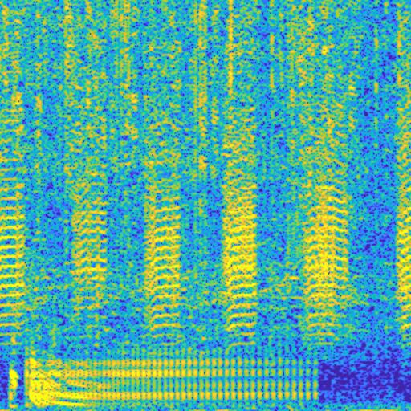
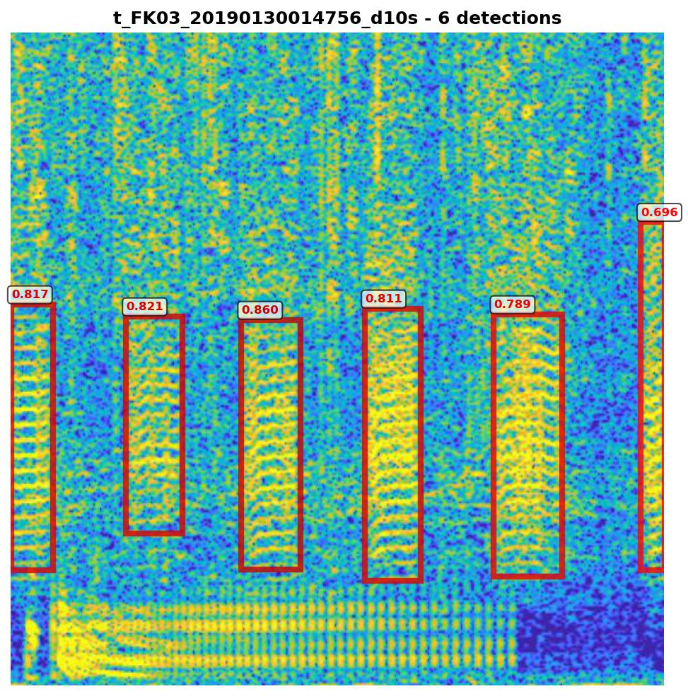

Shannon Ricci
This is a spectrogram of underwater sound recorded at a site within the Florida Keys National Marine Sanctuary. This is a ten second recording, with the colors showing how loud the sound is, with brighter yellow colors being louder sounds, and cooler blue colors being quieter sounds. Sounds in the upper part of the image are higher frequency (higher pitch) sounds, and lower in the image are lower frequency (pitch) sounds.

Spectrogram of the 10-second underwater recording
Part of my research is to identify the different fish calls in these sound recordings. Here, the focus is on the call of the leopard toadfish, Opsanus pardus, a bottom-dwelling fish that lives in the crevices of the reef structure and produces a “boatwhistle” call to attract mates. In this image, we also see the call of another fish, the red hind, Epinephelus guttatus, another reef-dwelling fish in the grouper family. While not the target of my research, it shows the diversity of biological sounds that we can observe in a short sound clip.

Detected fish calls with confidence scores — toadfish boatwhistles and red hind calls
For more information on the SanctSound project, visit sanctsound.ioos.us
For more information on fish call detection, see doi.org/10.1371/journal.pone.0182757